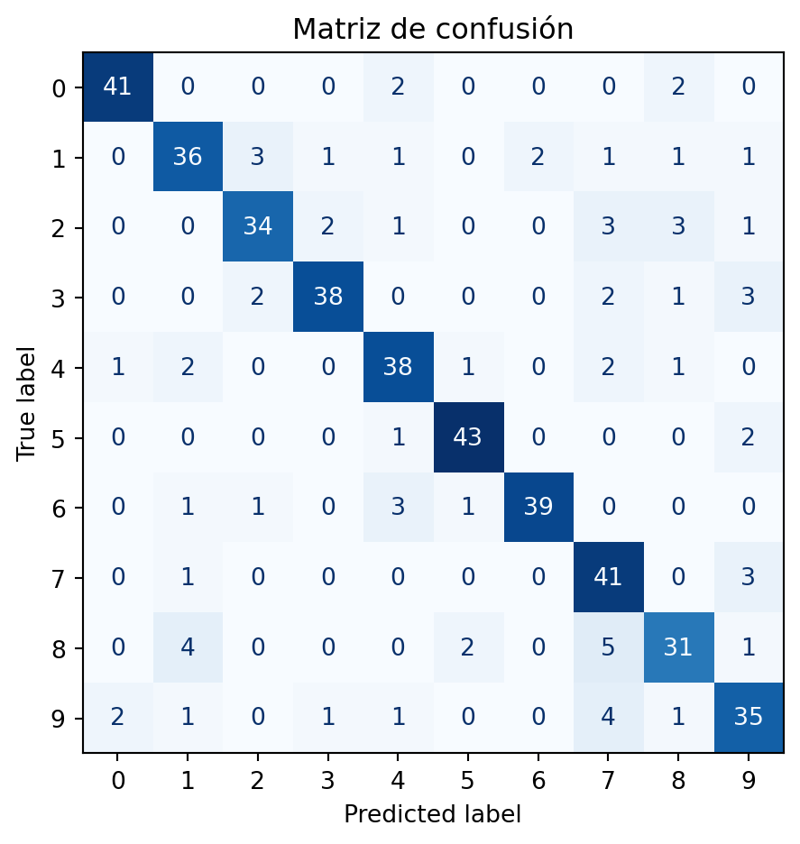

Video: Tu primer modelo de Machine Learning en Python
Texto: Tu primer modelo de Machine Learning en Python
Introducción
En la sesión 3 describimos cómo funciona un algoritmo árbol de decisión: el modelo hace preguntas binarias [sí/no] sobre los datos hasta llegar a una respuesta.
Ahora vamos a hacer exactamente lo mismo, pero con Python 🐍. No es necesario memorizar el código, la idea es que puedas comprender qué hace cada línea y conectarla con conceptos que ya conoces.
Recuerda: sesión 3
Describimos el árbol de decisión (Random Forest) como el juego de las 20 preguntas: el modelo hace preguntas [sí = 1/no = 0] sobre los datos hasta llegar a una respuesta. Hoy, Python va a construir ese árbol automáticamente a partir de miles de ejemplos etiquetados.
Cinco pasos que todo modelo de Machine Learning recorre
Antes de pasar al código, vamos a familiarizarnos con el flujo de un modelo de machine learning (aprendizaje de máquinas). Cada sección del experimento corresponde a uno de estos pasos.
📦DatosLos ejemplos etiquetados que el modelo usará para aprender.
→
✂️SepararDividir en dos grupos: uno para aprender (train = datos de entrenamiento), uno para evaluar (test = datos de prueba).
→
🏋️EntrenarEl modelo estudia el grupo de entrenamiento y construye reglas.
→
🔮PredecirEl modelo recibe ejemplos nuevos y decide qué cree que son, dado lo aprendido en el entrenamiento.
→
📊EvaluarComparamos las predicciones del modelo contra los datos etiquetados ("ground truth").
Estos cinco pasos son universales. Un modelo que detecta tumores en radiografías, uno que predice el precio de una casa o uno que reconoce tu voz siguen exactamente este mismo flujo.
Por qué dividimos los datos: una analogía sencilla
Imagina que estudias para un examen con una guía de estudio: cada pregunta tiene una respuesta. Si el día del examen el profesor usa exactamente las mismas preguntas, sacas diez — pero eso no significa que aprendiste. Solo memorizaste las respuestas.
Con los modelos de machine learning pasa exactamente lo mismo. Si entrenamos con las mismas imágenes que usamos para evaluar, el modelo puede “recordar” las respuestas correctas sin haber aprendido nada útil para imágenes nuevas.
La solución es siempre la misma: separar los datos antes de empezar.
Las 1,797 imágenes del dataset digits
Entrenamiento · 75% · 1,347 imágenes
Prueba · 25% · 450
El modelo puede ver estas imágenes muchas veces durante el entrenamiento.
Estas imágenes quedan bloqueadas hasta la evaluación final. El modelo nunca las ve antes.
La regla de oro
Nunca uses los datos de prueba durante el entrenamiento. La precisión que obtienes al final solo tiene sentido si el modelo no vio esas imágenes antes.
El experimento: reconocer dígitos escritos a mano
El conjunto de datos que usaremos se llama digits. Contiene 1,797 imágenes en escala de grises de dígitos escritos a mano (del 0 al 9), cada una de 8×8 píxeles. Es pequeño, claro y perfecto para un primer experimento.
Primero observa cómo se ven algunos de estos dígitos:
Figure 1: Diez imágenes del dataset digits. Cada una tiene 8×8 píxeles y una etiqueta que indica qué número es.
Cada imagen es una cuadrícula de 8×8 = 64 valores numéricos entre 0 (blanco) y 16 (negro). Eso es lo que el árbol de decisión va a analizar para decidir qué dígito es cada imagen.
Google Colab — tu laboratorio
Para escribir y ejecutar Python no necesitas instalar nada. Google Colab es un cuaderno de código que corre directo en el navegador.
mi_modelo.ipynb● Conectado
+ Código+ TextoArchivoEntorno de ejecuciónVer
Sesión 12: vamos a construir un árbol de decisión que reconoce dígitos escritos a mano.
# Cargar datos y entrenar el árbolfromsklearn.datasetsimportload_digitsfromsklearn.treeimportDecisionTreeClassifierprint("Listo para reconocer números")
Listo para reconocer números
+ Agregar celda de código+ Agregar celda de texto
Abrir Colab
colab.research.google.com → Necesitas una cuenta de Google. Crea un cuaderno nuevo desde “Archivo → Nuevo notebook” y copia el código de esta sesión.
Introducción breve a Python
No necesitas conocer todo el lenguage de Python para entender este experimento. Estas cuatro piezas son suficientes.
01 · Variables
Guardar algo con nombre
Una 'variable' guarda un valor para reutilizarlo después. digits, modelo y score son todas variables.
modelo=DecisionTreeClassifier()
02 · Funciones y métodos
Pedir que algo haga una tarea
Los paréntesis () indican que se ejecuta una acción. load_digits() carga datos. modelo.fit() entrena el árbol.
modelo.fit(X_train, y_train)
03 · Índices
Elegir un ejemplo concreto
X_test[12] significa: dame el ejemplo número 12 del grupo de prueba. Los corchetes [ ] sirven para elegir elementos.
imagen=X_test[12]
04 · print()
Mostrar un resultado en pantalla
Todo lo que quieras ver pasa por print(). Úsalo para inspeccionar la precisión, la predicción o cualquier variable.
print(score)
Del árbol de decisión al código: cada línea explicada
Con los cinco pasos del flujo de ML en mente y el Python mínimo claro, ya puedes leer el experimento completo. Haz clic en cualquier línea para ver qué hace exactamente.
mi_modelo.py← haz clic en una línea para entenderla
17# ── Paso 4: Entrenar (aquí ocurre el aprendizaje) ─────
18modelo.fit(X_train,y_train)
19
20# ── Paso 5: Predecir y evaluar ────────────────────────
21prediccion=modelo.predict([X_test[12]])[0]
22score=modelo.score(X_test,y_test)
23print(f"Precisión: {score:.3f}")
Output »Precisión: 0.853
👆
Haz clic en cualquier línea para ver su explicación.
El experimento completo: el árbol en acción
Tres ventanas para ver el modelo funcionar: primero una predicción concreta, luego la estructura interna del árbol, y finalmente el rendimiento global.
Figure 2: Una imagen del grupo de prueba con la predicción del árbol. El modelo puede acertar o equivocarse.
Precisión global: 0.836 (376/450 imágenes de prueba)
Una sola predicción dice poco: el árbol acierta el ~85% de las veces y se equivoca en el resto. Lo importante es entender el patrón de errores, que veremos a continuación con una matriz de confusión. Pero primero, visualicemos árbol.
2 · El árbol de decisión: las preguntas que hace el modelo
Aquí está lo que construyó Python. Cada nodo hace una pregunta sobre el valor de un píxel: si la respuesta es sí (≤ umbral), el árbol va a la izquierda; si no, va a la derecha. El árbol completo tiene 10 niveles — aquí mostramos los primeros 3 para que sean legibles.
Figure 3: Primeros 3 niveles del árbol de decisión. Cada nodo hace una pregunta sobre el valor de un píxel; según la respuesta (✓ Sí / ✗ No) el árbol toma una rama. Los nodos del fondo muestran la clase predicha en ese punto. El árbol completo tiene 10 niveles.
Cómo leer este diagrama
Cada recuadro azul es un punto de decisión. El árbol revisa el valor de un píxel específico de la imagen (en una cuadrícula de 8×8) y hace una pregunta binaria:
Flecha verde → Sí: el valor de ese píxel es menor o igual al umbral → el árbol sigue por la rama izquierda.
Flecha naranja → No: el valor es mayor → el árbol sigue por la rama derecha.
Los nodos del fondo son el resultado de seguir esas dos ramas dos veces: muestran el dígito (clase 0–9) que el modelo predice si una imagen llega hasta ese punto.
Este diagrama solo muestra los primeros 3 niveles. El árbol real tiene 10 en total — después de esas 10 preguntas, el modelo da su predicción final.
Esto es el árbol de decisión que describimos en la sesión 3, construido automáticamente por Python a partir de 1,347 ejemplos. Cada umbral (el número después de ≤) fue elegido por el algoritmo para separar mejor los dígitos durante el entrenamiento.
3 · ¿Dónde acierta y dónde se confunde? La matriz de confusión
Ver el código de la matriz de confusión
import matplotlib.pyplot as pltfrom sklearn.metrics import ConfusionMatrixDisplayfig, ax = plt.subplots()ConfusionMatrixDisplay.from_estimator( modelo, X_test, y_test, ax=ax, colorbar=False, cmap="Blues",)ax.set_title("Matriz de confusión")plt.tight_layout()plt.show()

Figure 4: Cada fila es el dígito real; cada columna es lo que predijo el modelo. La diagonal brillante son aciertos. Los cuadros fuera de la diagonal son errores.
Cómo leer la matriz — celda por celda
La matriz tiene 10 filas y 10 columnas (una por cada dígito, del 0 al 9). Para leer cualquier celda usa esta regla:
Fila = el dígito que realmente era la imagen escrita a mano.
Columna = lo que el modelo predijo que era.
Número en la celda = cuántas veces ocurrió esa combinación exacta.
Los aciertos: la diagonal
Todas las celdas donde fila = columna son aciertos. El modelo predijo el dígito correcto.
Celda [fila 0, columna 0]: el modelo vio imágenes del dígito 0 y predijo 0 ✓. Si el número es 41, eso pasó 41 veces.
Celda [fila 1, columna 1]: vio un 1 y predijo 1 ✓.
Cuanto más brillante (más azul) es la diagonal, mejor está funcionando el modelo en ese dígito.
Los errores: todo lo que está fuera de la diagonal
Cada celda fuera de la diagonal es un tipo de error específico.
Celda [fila 1, columna 0]: el modelo vio una imagen del dígito 1 pero predijo 0 ✗. Si el número es 0, ese error nunca ocurrió.
Celda [fila 3, columna 8] (por ejemplo): vio un 3, pero lo confundió con un 8 ✗.
Cuanto más brillante sea una celda fuera de la diagonal, más frecuente es ese error.
Cómo encontrar el error más común del modelo:
Ignora la diagonal brillante.
Busca la celda más intensa (más azul) que esté fuera de esa diagonal.
Lee su fila (dígito real) y su columna (dígito que predijo el modelo).
Pregúntate: ¿se parecen visualmente esos dos dígitos escritos a mano? ¿Por qué crees que el árbol los confundió?
Actividad: tres experimentos
Vamos a intentar mejorar nuestro modelo. Queremos que acierte más del ~84% de las veces. Lo que intentaremos hacer es cambiar los parámetros del modelo. A cada modificación le denominaremos experimento. Cada experimento tiene un objetivo claro — no hace falta dominar todo el código completo para aprender algo valioso.
Experimento A · ¿Cuántas preguntas necesita el árbol?
El parámetro max_depth controla el número máximo de preguntas que puede hacer el árbol antes de dar una respuesta. Busca la línea DecisionTreeClassifier(max_depth=10, ...) y prueba estos valores uno por uno, corriendo el código completo cada vez:
Valor
Qué significa
Precisión esperada
max_depth=2
Solo 2 preguntas — árbol muy simple
~50–65 %
max_depth=5
5 preguntas — árbol moderado
~75–80 %
max_depth=10
El original
~85 %
max_depth=None
Sin límite — el árbol crece todo lo que pueda
¿sube o baja?
Pista: el peligro de un árbol sin límite
Un árbol sin max_depth puede memorizar cada imagen de entrenamiento en vez de aprender reglas generales — como estudiar copiando las respuestas de la guía sin entender nada. En entrenamiento funciona perfectamente; con imágenes nuevas, falla. Eso se llama sobreajuste.
Pregunta: ¿Por qué un árbol con solo 2 preguntas acierta tan poco? ¿Y por qué quitarle el límite del todo tampoco mejora mucho?
Experimento B · Dale nombre a un error de la matriz
La matriz de confusión te dice qué pares de dígitos confunde el modelo. Ahora vas a encontrar ese error en una imagen :
Mira la matriz y localiza la celda más brillante fuera de la diagonal. Anota: ¿qué dígito (fila) se confunde con qué predicción (columna)?
Busca la línea indice = 12 y cámbiala por números entre 0 y 449 hasta que el modelo cometa ese error exacto — que prediga el dígito incorrecto que encontraste en el paso 1.
Observa la imagen: ¿puedes ver a simple vista por qué el árbol se confundió?
Pregunta: ¿Esos dos dígitos se parecen visualmente cuando alguien los escribe a mano? ¿Crees que un humano también los confundiría?
Experimento C · ¿Qué pasa si el árbol aprende con menos datos?
Busca la línea test_size=0.25 y cámbiala por test_size=0.5. Esto mueve el 50 % de las imágenes al grupo de prueba — el árbol aprende solo con las 898 imágenes restantes en vez de las 1,347 originales.
Pregunta: ¿Sube o baja la precisión? ¿Por qué crees que tener menos imágenes de entrenamiento cambia el resultado?
IA como copiloto del experimento
Úsalo ya
Explícame este bloque
Pega unas pocas líneas y pide que te las traduzca a lenguaje natural. Más útil que buscar en Google.
"Explícame qué hacen estas líneas como si nunca hubiera programado: modelo = DecisionTreeClassifier(max_depth=10), modelo.fit(X_train, y_train), score = modelo.score(X_test, y_test)"
Úsalo ya
Tengo un error
Pega el mensaje exacto del error y tu código. La IA puede identificar qué salió mal mucho más rápido que intentarlo a ciegas.
"Me salió este error en Python: NameError: name 'X_train' is not defined. Aquí está mi código completo. ¿Qué estoy haciendo mal?"
Úsalo con criterio
¿Qué pasa si…?
Cuando ya entiendes el experimento, puedes preguntarle a la IA qué efecto tendrá cambiar un parámetro antes de correrlo.
"En mi árbol de decisión, si cambio max_depth de 10 a 2, ¿qué efecto esperas en la precisión y por qué? Explícalo en términos simples."
Qué aprendiste de ML y qué aprendiste de Python
De machine learning
Un modelo aprende de ejemplos etiquetados — nadie le programó las reglas a mano.
La separación entrenamiento/prueba es la condición mínima para que la precisión tenga significado. Sin ella, no sabes si el modelo aprendió o memorizó.
La profundidad del árbol es un un arma de doble filo: muy baja = no aprende lo suficiente, sin límite = memoriza en vez de generalizar. El punto óptimo está en el medio.
La matriz de confusión te dice qué errores comete el modelo, no solo cuántos — es más útil que la precisión sola.
De Python
Con seis líneas de sklearn puedes entrenar un clasificador que reconoce el ~85 % de imágenes de dígitos que nunca ha visto.
Un solo parámetro (max_depth, test_size) puede cambiar el resultado por completo.
Modificar un experimento existente ya es programar, no hace falta empezar desde cero.
Si quieres seguir aprendiendo
🧪
Google Colab
Google
Cuadernos de Python en el navegador, sin instalar nada. El lugar más fácil para empezar a experimentar.
GratisEn el navegador
🐍
Kaggle Learn: Python
Kaggle
Lecciones cortas con ejercicios interactivos en el navegador. El mejor punto de partida para aprender Python desde cero.
GratisPrincipiante
🤖
Kaggle Learn: Intro to ML
Kaggle
Aprende más sobre modelos de ML. Extiende exactamente lo que hicimos hoy en esta sesión.
GratisPrincipiante
🎓
CS50P — Python
Harvard / edX
Curso completo de Python para principiantes, estructurado y riguroso. Para cuando quieras ir más allá de los experimentos.
Gratis
Cierre
Ojalá te puedas quedar con estas ideas
El árbol que corriste hoy aprendió solo. Nadie le dijo cómo distinguir un 4 de un 9 — lo dedujo a partir de 1,347 imágenes etiquetadas. Eso es machine learning.
La regla de oro: nunca entrenes con los datos de prueba. Si el modelo ya vio las respuestas, la precisión no significa nada — como ver las preguntas del examen antes de hacerlo.
Más complejidad no siempre es mejor. Un árbol sin límite de profundidad memoriza en vez de aprender. El objetivo de todo modelo es generalizar; es decir, acertar con datos nuevos, no solo con los que ya vio.
Hoy experimentaste como lo hace un equipo de ML. Cambiaste parámetros, observaste efectos, leíste una matriz de errores y buscaste patrones. No tuviste que entender cada línea de código para aprender algo.